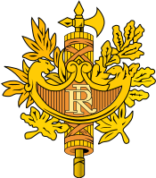

- Головне гасло французької революції, яке в результаті стало девізом Французької республіки.
Загальні відомості про Францію
Франція є захоплюючою країною в Західній Європі. Вона відома своєю видатною культурною спадщиною,
розкошними ландшафтами та багатою історією. Паризька вежа, Лувр та катедраль Нотр-Дам — це лише
деякі з символічних пам'яток.
Франція славиться своєю вишуканою кухнею, включаючи вино, сир і десерти. Країна також відома своєю
модною індустрією та мистецькими досягненнями. Франція має багатий різноманітний ландшафт, включаючи
Альпи, Піренеї, Лазурний берег та красиві сільські місцевості. Франція є демократичною республікою і є
членом багатьох міжнародних організацій, таких як ООН та Європейський Союз.
Державний прапор Франції

Державний Герб Франції
Додаткові деталі:
Франція також відома своєю культурною різноманітністю та національними святами.
Французька мова є офіційною мовою, але є багато регіональних мов та діалектів.
Політичне життя Франції
Франція - президентська республіка з розвиненою демократією.
Президент Франції обирається загальним прямим голосуванням на 5 років (до 2002 року — 7 років). Президент
обирається абсолютною більшістю голосів. Якщо цієї більшості не набрано в першому турі голосування,
проводиться другий тур. На сьогодні Президентом Французької республіки є Емманюель Макрон, обраний на
виборах 2022 року.
Президент:
призначає прем'єр-міністра і за поданням останнього — міністрів без затвердження їх парламентом;
має право розпускати Національні збори;
має право після попередніх консультацій із головою Національних зборів призначати нові вибори;
головує у Раді міністрів;
головує у Вищій раді оборони;
є верховним головнокомандувачем збройними силами;
виносить на референдум проєкти законів;
оприлюднює закони;
може вживати будь-яких надзвичайних заходів, які «диктуються обставинами»;
очолює Вищу раду магістратури.
25-й президент Франції - Емманюель Макрон
Законодавча влада
Законодавча влада здійснюється через парламент, який складається з двох палат: Національної асамблеї
(нижня палата) і Сенату (верхня палата).
Депутати Національної Асамблеї обираються за мажоритарною системою у 2 тури строком на 5 років.
Національна Асамблея складається з 577 членів: 555 членів обираються шляхом прямого, загального і
таємного голосування за мажоритарною системою в 555 одномандатних виборчих округах у метрополії та 22
члени — в заморських департаментах і територіях.
Сенат
Сенат обирається колегією виборників із поновленням кожні 3 роки наполовину. Сенатором може бути
обраний громадянин віком від 30 років. Число сенаторів становить 346 осіб.
Депутати Національної Асамблеї обираються за мажоритарною системою у 2 тури строком на 5 років.
Національна Асамблея складається з 577 членів: 555 членів обираються шляхом прямого, загального і таємного
голосування за мажоритарною системою в 555 одномандатних виборчих округах у метрополії та 22 члени —
в заморських департаментах і територіях. Голова Національної Асамблеї — Бернар Аккуфйє (СПНР),
обраний 26 червня 2007 року.
Парламент Франції
Історія Франції
Під час залізної доби, те, що зараз є метрополією Франції, було заселено галлами, кельтським народом. Рим
анексував цю територію у 51 році до н. е., утримуючи її до приходу германських франків у 476
році, які
утворили Франкське королівство. Верденський договір 843 року поділив Францію на Східне, Середнє
та Західне
франкські королівства. Західне королівство, яке стало Королівством Франції у 987 році, було
потужною
європейською державою середньовіччя при королі Філіпі II Августі. В епоху Відродження процвітала французька
культура і було створено глобальну колоніальну імперію, яка до XX століття стала другою за величиною у
світі. У XVI столітті, Франція пережила релігійні громадянські війни між католиками та
протестантами
(гугенотами). У XVII столітті при Людовіку XIV, Франція стала домінівною в Європі
культурною, політичною та
військовою силою. В кінці XVIII століття Французька революція скинула абсолютну монархію,
створивши одну
з найстаріших республік у новітній історії та розробивши Декларацію прав людини та громадянина, яка й донині
виражає ідеали нації.
У XIX столітті, Наполеон взяв владу і заснував Першу французьку імперію. Його Наполеонівські
війни
(1803—1815) сформували хід історії континентальної Європи. Після розпаду імперії, Франція
пережила бурхливий
період зміни урядів, який завершився створенням Третьої Французької Республіки у 1870 році.
Франція була
важливим учасником Першої світової війни, з якої вона вийшла переможцем, а також була членом
антигітлерівської коаліції у Другій світовій війні, однак була окупованою країнами Осі у 1940 році. Після
визволення країни у 1944 році, пізніше створена Четверта республіка була розпущена у ході Алжирської війни.
П'яту та нині чинну республіку на чолі з Шарлем де Голлем утворено у 1958 році. Алжир та більшість інших
колоній стали незалежними у 1960-х роках, зберігши тісні економічні та військові зв'язки з Францією.
У XIX столітті, Наполеон взяв владу і заснував Першу французьку імперію. Його Наполеонівські війни
(1803—1815) сформували хід історії континентальної Європи. Після розпаду імперії, Франція пережила бурхливий
період зміни урядів, який завершився створенням Третьої Французької Республіки у 1870 році. Франція була
важливим учасником Першої світової війни, з якої вона вийшла переможцем, а також була членом
антигітлерівської коаліції у Другій світовій війні, однак була окупованою країнами Осі у 1940 році. Після
визволення країни у 1944 році, пізніше створена Четверта республіка була розпущена у ході Алжирської війни.
П'яту та нині чинну республіку на чолі з Шарлем де Голлем утворено у 1958 році. Алжир та більшість інших
колоній стали незалежними у 1960-х роках, зберігши тісні економічні та військові зв'язки з Францією.
Економіка Франції
Франція — високорозвинена постіндустріальна країна. За розмірами ВВП і обсягом промислового виробництва
Франція посідає одне з провідних місць у західному світі (разом зі США, Німеччиною, Великою Британією та
ін.).
Провідна галузь промисловості — машинобудування. Розвинуті автобудування, суднобудування, тракторо- і
авіабудування, електротехнічна і радіоелектронна промисловість, а також хімічна (виробництво соди, добрив,
хімічних волокон, пластмас), нафтопереробна і нафтохімічна промисловість.
Експортне значення мають виробництва: текстилю, одягу, галантереї, харчова промисловість і виноробство.
Розвинені всі види сучасного транспорту. Головні морські порти — Марсель, Гавр, Дюнкерк, Руан, Нант,
Сен-Назер, Бордо. Транспортна мережа має радіальну конфігурацію з єдиним центром — Парижем.
Третина території Франції використовується на сільське господарство. Традиційно важливим сектором економіки
Франції є сільське господарство.
Великі прибутки приносить також туризм, який особливо розвинений у Парижі, на узбережжі та в горах.
За даними [Index of Economic Freedom, The Heritage Foundation, U.S.A., 2021]: ВВП — 1600 млрд
$. Темп
зростання ВВП — 3,2 %. ВВП на душу населення — $ 27 975. Прямі іноземні інвестиції — $ 12,5 млрд. Імпорт і
експорт Франції.
Франція — одна з найбільших економічно розвинених країн світу.